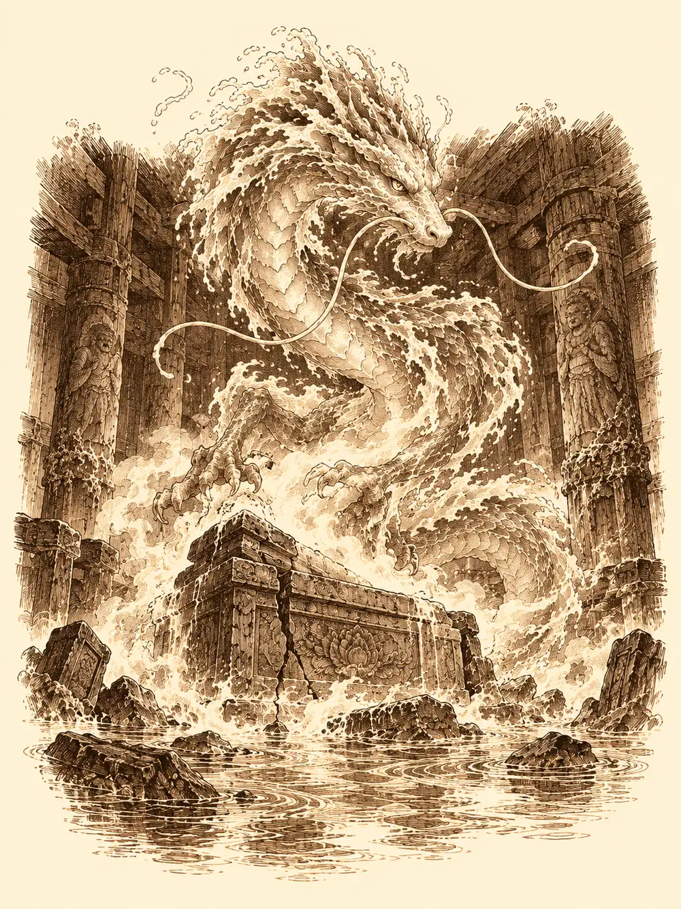

Capítulo 173
Inundación en el este
Libro X · Hasta pronto, Kuroto
En Ukio volvía a oírse el martillo del herrero. La gente había regresado a sus casas cuando el bosque dejó de oler a muerte, y la taberna tenía otra vez ese rumor de voces y cuencos que Guxi, Serafina y Kazuki recordaban de otras visitas. Habían ido a comprobar que todo estuviera en orden. Kazuki llevaba el estoque al cinto y no lo había limpiado. En los resquicios de la hoja quedaba sangre seca de Chilia. No había encontrado fuerzas para quitarla.
Arwen salió del bosque caminando sobre dos pies, con las manos y las rodillas negras de tierra y la cabeza gacha. No sonreía como siempre.
"Hola. ¿Qué hacéis por aquí?".
"Ver si está todo bien", dijo Guxi. "Y con la gran guardiana del bosque seguro que lo está".
A la niña no pareció alegrarla el título.
"Arwen ha estado aquí muchos días. Los que olían a muerte se han ido y no han dejado rastro. Las plantas vuelven a crecer y los animales están regresando". Se encogió de hombros. "Casi todo ha vuelto a la normalidad".
Kazuki se arrodilló, la sentó sobre la otra rodilla y la abrazó. Ella le dijo que le hacía falta un abrazo. Guxi y Serafina se unieron, y la niña los fue mirando uno a uno con los ojos brillantes y, a ratos, vacíos.
"Gracias. Arwen no va a permitir que os pase nada".
Kazuki le contó, sin rodeos, que seguía viendo lo que había tenido que hacer. Arwen le miró la mano, la mano se le iluminó y de ella brotó una flor blanca.
"No estés triste. Chilia no querría ver a nadie llorar. Querría que la gente peleara con ella".
El mago tomó la flor, pasó los dedos por encima y la flor se fue cerrando hasta convertirse en un broche que se le quedó prendido en el pecho de la casaca roja.
Entonces Arwen levantó la vista. Dos cosas cruzaban el cielo a una velocidad imposible, una persiguiendo a la otra, y se perdían por encima del bosque. Se quedó mirándolas con la boca abierta. Luego se convirtió en loba, ladró y echó a correr detrás.
Las siguieron hasta el templo oriental, en la costa. Allí, sobre las rocas, dos figuras discutían a gritos quién había llegado antes. Una era Sun, con la nube a los pies. La otra era el hombre de los tres ojos.
El visitante se presentó esta vez con un nombre más largo, Erlang Shen, y les recordó a todos que tenía un combate pendiente con el mono para cuando este terminara su camino. A Guxi le dedicó una broma sobre su manera de mirar a Serafina que no le hizo ninguna gracia. Serafina le contestó con otra peor.
El templo estaba medio destrozado. Arwen se convirtió en cucaracha y se metió por la primera rendija que vio, y desde dentro descubrió en las paredes pinturas viejas de protectores alados. Sacó una cera roja de algún sitio y dibujó a su lado una Arwen pequeñita.
Fuera, los demás discutían sobre si dejar a la niña sola ahí dentro. Sun abrió una puerta y del muro salieron virotes de hielo que se les clavaron en el pecho. Shen se había bebido algo antes y el frío ni lo rozó.
"Eso se llama estar preparado. Tú no lo estás".
A medida que bajaban, el agua subía. Sun recordaba el santuario de la otra vez, con sus tiburones viejos en los estanques, pero ahora el mar lo había invadido todo. Arwen les dio de comer y les preparó burbujas para respirar. El altar estaba roto, inservible. El sarcófago, en el centro de la sala sumergida, era un bloque sellado que no respondía a gritos, ni al anillo, ni a los golpes. Shen soltó un pulpo de entre sus dedos y lo mandó a explorar fuera. Volvió diciendo que había tiburones y unas ranas enormes nadando alrededor del templo.
Pasaron diez minutos así, entre discusiones y vueltas al sarcófago. Kazuki detectó magia divina dentro, nada más.
Serafina se acercó y apoyó la mano en la piedra. Cerró los ojos, concentró su energía y no encontró ningún punto débil: aquello llevaba siglos intacto. Pero notó otra cosa.
"Aquí dentro hay algo. Algo muy fuerte".
Sun se sentó en postura de loto con el anillo entre las manos y trató de alcanzar esa presencia. Le costaba. Serafina se apartó del sarcófago, le puso la mano en el hombro, cerró los ojos y meditó a su manera, sumando su energía a la de él. Lo notaron los dos a la vez: un gruñido que se removía, una mirada que se les posaba encima sin que pudieran ver de dónde venía.
"Los traidores. Así que ahora habéis venido a por mí. Malditos asesinos".
Del sarcófago brotó una niebla que se enroscó alrededor de la piedra hasta tomar la forma de un dragón serpentino y oscuro. Era Seiryu, el guardián del este.
"No somos traidores", empezó Sun. "Le han comido la mente".
"¿No es verdad que vuestros antepasados vinieron a esta tierra? Matasteis a los nuestros y los despellejasteis. A los animales, a los yokai, al bosque. A todos los hijos de la tierra".
"Puede ser. No lo sabemos. Pero no se puede culpar a los hijos por los pecados de los padres".
"Entonces debéis pagar por ello".
Arwen, en forma de pez, nadó hasta ponerse delante del dragón.
"¿Y los yokai buenos también tienen que pagar? Arwen ha visto a muchos sufrir, y Otakemaru no los defendía. Los encerraba y los mataba. Yo lo vi. El sur está seco y no crece nada. Arwen protege los bosques y a los yokai. Soy Arwen, protectora de los bosques de Kuroto".
"Los protectores murieron. Algunos, por vuestras manos".
"Pues entonces ha llegado una nueva".
"No sois lo bastante fuertes".
"Arwen pudo con lo que pasó en el bosque. Y si no puede, luchará con todas sus fuerzas, ella y sus amigos".
El dragón le hizo una mueca que casi era una sonrisa, y luego miró a Sun. El mono insistió: los de ahora estaban intentando corregir aquel error, y había alguien llamado Otakemaru que quería destruirlo todo, yokai y animales incluidos.
"¿Me decís que vuestros imperios no siguen extendiéndose? ¿Que no siguen talando nuestros árboles? ¿Que no siguen llegando hombres a llevarse a nuestras bestias? Otakemaru fue nuestro rey".
"Todo cambia, guardián. Los bosques se vuelven desiertos y luego vuelven a crecer".
"Pues entonces ahora volverá a cambiar".
Y rugió.
El agua se llenó de hielo y de remolinos. El templo tenía voluntad propia y se volvió contra ellos, y por las grietas de las paredes entraron ranas del tamaño de un hombre y tiburones que olían la sangre. Arwen perdió su forma de pez y siguió peleando con su tótem y su luz. Guxi desplegó sus torretas. Kazuki lanzó magia, y llegó a descargar un rayo bajo el agua; aguantaron aquella sacudida y otras porque Shen había trazado a su alrededor un círculo de poder que los ayudaba a resistir los conjuros. La bola de fuego de Guxi se apagó en el agua sin hacer nada, como era de esperar.
Arwen curaba a todo el que se le acercaba. En un momento dado se plantó delante de dos tiburones y les habló hasta que se volvieron contra las ranas, y cuando la pelea terminó los dejó marchar al océano. Sun y Serafina buscaban el hueco en la defensa del dragón, golpe tras golpe, intentando dejarlo aturdido. Seiryu resistía.
Hasta que el mono encontró el sitio. Apoyó la palma, soltó la energía, y el dragón se desplomó en el agua, inconsciente.
Serafina nadó hasta él y encontró, clavado entre las escamas, un objeto parecido al que habían arrancado de Byakko. Antes de atenderlo tuvieron que terminar con las ranas que quedaban.
Sun tiró con todas sus fuerzas y no salió. Serafina tampoco pudo. Kazuki examinó la herida y no supo decir cómo extraerlo sin hacer más daño. Guxi se acercó, lo miró de cerca y frunció el ceño.

"Esto no es mágico. Por lo menos no como lo es un objeto". Lo tocó con cuidado. "Es como un trozo de un recuerdo. Como si alguien hubiera roto el recuerdo de otro y se lo hubiera clavado".
Los artífices saben escuchar a las cosas. Guxi se concentró en el fragmento y se le quedaron los ojos quietos.
Vio Kuroto. Vio el peñasco donde ahora se alzaba Sho, y encima un campamento pequeño, tres o cuatro casas, unos huertos. Un poblado que empezaba. Sus vecinos estaban de pie en semicírculo, con hoces y con espadas, gritando. Delante de ellos había un hombre rodeado de yokai pequeños. Hablaba, intentaba explicar algo. Los vecinos lo empujaban con las armas para apartarlo y alguno llegó a pincharlo. El hombre levantó las manos en señal de paz y retrocedió. Al final se marchó con los suyos.
Guxi parpadeó.
"He visto a alguien protegiendo a los suyos de los primeros pobladores de Kuroto. De los que llegaron hace tanto tiempo".
"Ese mismo hombre lo vi yo", dijo Serafina. "Cuando fuimos al otro guardián. Es el mismo. No sé si era su líder, o qué era. Pero es alguien muy importante".
Nadie dijo en voz alta lo que algunos empezaban a pensar.
Arwen nadó hasta la cabeza del dragón y le puso la mano encima. Seiryu empezó a gruñir y a enseñarle los colmillos, pero no la mordió.
"¿Esos eran tus amigos?".
"Eran los que vivían aquí. Antes de que viniera más gente, esta fue siempre la tierra de los yokai".
"¿Y qué pasó después? ¿Por qué ahora encuentro tan pocos en los bosques?".
El dragón alzó la cabeza.
"Porque vosotros los destruisteis".
"Pero Arwen no ha destruido a ninguno. Arwen los ha estado salvando". Lo acarició. "Si Arwen promete proteger a todos, cuando vuelvas jugarás con Arwen".
Seiryu la ignoró y se lanzó contra ellos. Sun detuvo el tiempo. Agarró a sus compañeros por la ropa y los apartó de las fauces, y cuando el tiempo volvió a correr recibió él la mordida. Abrazó la cabeza del dragón contra el pecho y le dio un golpe seco. Seiryu se fue deshaciendo en el agua en motas de luz, sin estallar, sin que nadie le hubiera sacado el recuerdo del costado.
Sun se miró la mano. Estaba helada, como si la hubiera metido en la nieve, igual que cuando había empujado a Arwen para apartarla. Arwen le puso la manita en el muslo para curarlo y el muslo se le enfrió también. Sun le tocó la cabeza con la otra mano: frío, y una chispita diminuta. Con Serafina no le pasaba. Nadie supo encontrar ninguna magia nueva en la niña.
"Quizá los poderes de la criatura hayan pasado a ella", dijo Shen, "por la promesa".
Nadie pudo confirmarlo. Las burbujas empezaban a romperse y el agua se les metía por la nariz. Salieron nadando, Sun tocando de vez en cuando a los demás con la mano fría para que se les erizara la piel, y Arwen riéndose detrás.
Fuera, Shen retuvo al mono un momento.
"Has demostrado un poco de lo que decías. He estado observándote. Hay veces que no cumples lo que dices. Esta vez parece que sí".
"La maldición de mi vida. Hablar de más".
"Te estás ganando poco a poco la visión que te mostré".
Chasqueó los dedos y Sun notó algo en la espalda. Se giró hacia un lado, hacia el otro, dio una vuelta completa intentando verlo, y al final lo agarró con la mano: una capa dorada.
"Recuerda lo que me prometiste. Cuando termines tu camino, tenemos algo pendiente".
"No se me va a olvidar. Has conseguido que tenga ganas".
En la base de Sho, Shizuka recorría las habitaciones quejándose de que sus compañeros ya no venían a dormir y siempre la dejaban fuera de todo. La puerta se abrió y entró un goliat enorme con media cara fundida. Le preguntó si conocía a Banzo. Ella le dijo que era su mejor amigo y que le dejaba ser el líder, aunque ahora los demás no querían ser cazadores. El goliat se rio al saber que Banzo mandaba en algo. Dijo que él había sido su mejor amigo de la infancia, le puso una mano en el hombro y le dijo que lo ayudaría a encontrarlo. Después la base se quedó en silencio.
En el palacio, Guxi encontró a Kazuki pensativo ante la mesa del consejo. El mago le preguntó si podía quedarse con el puesto de los cazadores, porque quería proteger el país. Guxi le dijo que pensaba dejarlo cuando terminara la guerra y que entonces sería suyo, pero que hasta ese momento podían compartir la carga para que no la llevara uno solo. Se dieron la mano.
En un parque de Sho, Serafina encontró a Kurobane sin sombra. Estaba agotado y aterrado. Le contó que la general le había arrancado las sombras después de ofrecerse a ayudarlo, que ya no podía crear copias de sí mismo ni defender a sus amigos como antes. Serafina llamó a Sun. El ninja se concentró y encontró dentro de sí un espacio limpio y ordenado, como un museo blanco, muy distinto del que recordaba de los tiempos de Osuray; pero sobre él flotaban nubes y unas luces rojas que eran los ojos de Véspera. Los dos monjes entraron en esa sala con él, de la mano. Sun atravesaba las figuras de la general como si fueran humo, y le enseñó a sentarse en loto. Repasaron recuerdos alegres y dolorosos, y sobre todo aquel, una vez y otra. Al día siguiente, en uno de los cuadros del museo aparecieron Calista y Gelbreak para acusarlo de los celos, de haberse acercado a Danifae. En otro, una Serafina cruel. En otro, Danifae entre arañas, que al final tenía su propia cara. Kurobane soltó la espada de sombras que le había nacido en la mano, reconoció sus errores y dijo que no quería morir, que quería seguir adelante. Los recuerdos lo aplastaron igual y la sala se volvió negra. Serafina le pasó su energía hasta sangrar por la nariz. Al despertar, Sun le reprochó las prisas: no se trataba de arrancar la mitad oscura, sino de equilibrar luz y sombra. Kurobane se fue a la base enfadado.
En el sur, Banzo arrastraba cuesta arriba una carreta cargada de soldados y gritaba al viento el nombre de su enemigo. Los gritos despertaron a Véspera. Jin propuso que practicaran juntos con armas de madera, a ver si así limaban asperezas. Banzo cargó con toda su fuerza y dejó demasiados huecos; ella se apartó y lo desequilibró con el escudo. Jin le dio el primer punto a la general. Más tarde, a solas, Banzo le contó a Jin que aquel goliat era de su tribu, que creía que eran los dos únicos supervivientes de un ataque drow, y que no quería vengarse sino demostrar que podía dejar atrás aquel pasado.
Cuando llegó a la base, Channi le saltó al cuello para contarle que le había devuelto el anillo a Tiari. Arwen salió del dormitorio y, al abrazarla, a Banzo se le erizó la piel de frío y le saltó una chispa. Entonces Kazuki entró y señaló la puerta.
Detrás había un papel clavado con una daga ensangrentada. De la empuñadura colgaba una cinta azul como la de Shizuka. La nota amenazaba con hacerle daño a la niña y citaba a Banzo dentro de dos días en la cala donde había recibido la paliza, para que explicara por qué había dejado escapar al dragón que había arrasado su tribu.
Banzo la leyó una y otra vez. Luego arrancó la daga de la puerta y la tiró con todas sus fuerzas.
"Se han llevado a Shizuka".
Mandó a Kazuki a avisar a Guxi y a Yasuoka para que los soldados estuvieran atentos a un goliat enorme con la cara podrida. Le pidió a Arwen que se convirtiera en algo que volara para reunir a los demás, y le ofreció el hombro a Channi. Kazuki salió corriendo hacia el palacio y Arwen alzó el vuelo sobre los tejados.